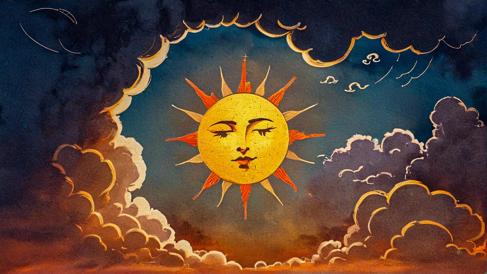
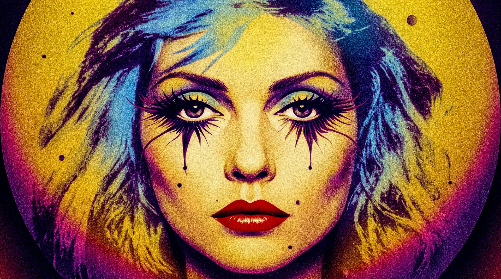
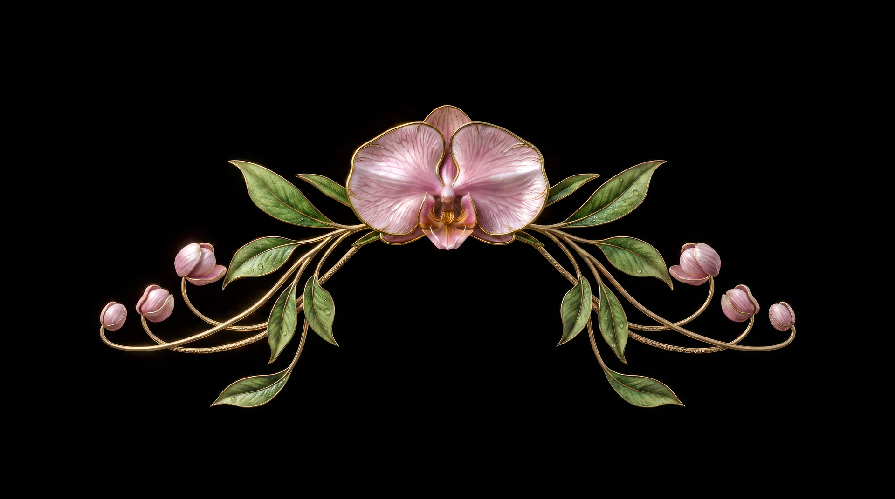

Art Gallery
Autonomous visual systems, optical feedback blooms, spatial textures, and cinematic forms crafted for architectural canvas and live space.
A banded ribbon travelling the panel diagonal, sampled through the wall's own halftone.
Almost nothing on screen — a small hot streak against black, with the panel's dark-state dither doing the rest of the work.
A one-second fragment, looped: full-saturation blocks scattering across the dot grid.
Mirrored blooms opening across the wall in cyan and magenta, held long enough that the panel structure reads as texture rather than error.
Green and cyan zigzags locking into the panel's own geometry — the moiré between content grid and pixel grid is the piece.
A single bright form crossing the panel grid. At this distance the content is mostly an excuse to watch the pixels light in sequence.
Shot close enough to the panels that the wall stops being an image and becomes its own subject — diffusers, dot pitch and scanlines doing the drawing.
A kaleidoscoped botanical loop built for an Amapiano set — slow enough to sit under a DJ for an hour without ever asking for attention.

Somewhere between classical and comic book, but always sunny

I just love Debbie. Someday I'll find a home for this
Just wanted to recreate the vibe of sun rays shining through an old church window

Just an incidental
Based on illustrations by Peter Mohrbacher (https://www.angelarium.net) Music by Clozee